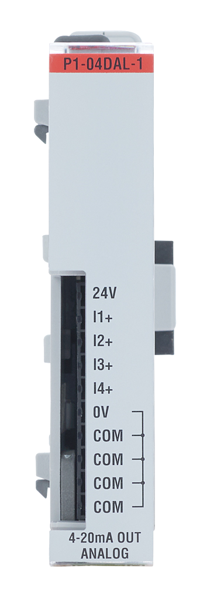

This function sends the current to be output by the channel as an integer value in counts.
int outputCounts = 0; //variable outputCounts is the output value
P1.writeAnalog(outputCounts, 1, 2); // Writes to channel 2 of the P1-04DAL-1 in slot 1Compatible Functions
Module Configuration and Status Tables
We recommend using the status functions. This table is provided as additional reference.
Module Status Data
| Bytes | (MSB) 7 | 6 | 5 | 4 | 3 | 2 | 1 | 0 (LSB) | Description |
|---|---|---|---|---|---|---|---|---|---|
| Byte 0 | x | x | x | x | x | x | x | x | bits 0-7 are undefined |
| Byte 1 | x | x | x | x | x | x | x | x | bits 0-7 are undefined |
| Byte 2 | x | x | x | x | x | x | x | x | bits 0-7 are undefined |
| Byte 3 | x | x | x | x | x | x | 1 | 0 | bit 1 - Lost 24V error bit 0 - Module diagnostics failure |
Module Configuration Data
This module does not require configuration.

Channels: 4
Current Range: 4-20 mA
Resolution: 12 bit (0-4095)
Example: Analog Output
Additional Resources:
Data Sheet
P1-04DAL-1
on AutomationDirect.com